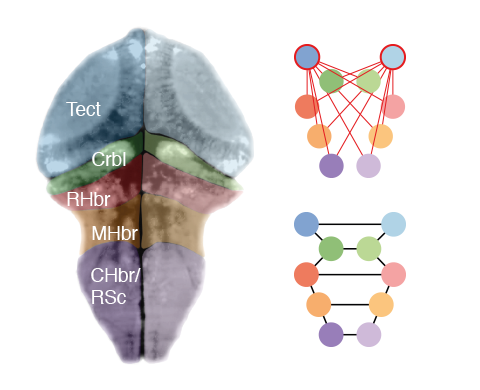
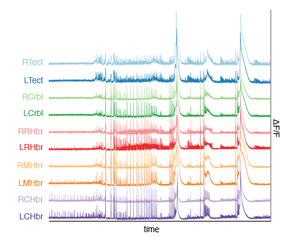
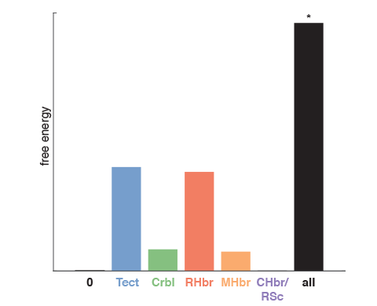
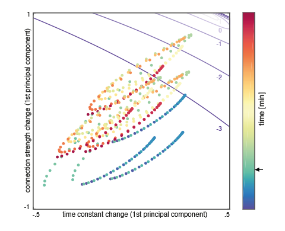

Light sheet calcium imaging captures brain activity in zebrafish larvae
- light sheet imaging allows optical sectioning and fast volumetric imaging at single cell resolution
- when averaged by region, this yields spatially unbiased recording of distributed neuronal activity (unlike local field potentials)
- calcium fluorescence dynamics allow us to reconstruct network connectivity between zebrafish brain regions
- light sheet imaging reveals a baseline network architecture that contains the optic tectum as centrally connected hub

Seizures induced with PTZ cause network-wide activity changes
- we induced seizures in 3 zebrafish larvae (5dpf, neuronal GCaMP6F) with the chemoconvulsant pentylenetetrazole (PTZ)
- PTZ causes wide-spread synchronised bursts of activity, changing the spectral composition of activity across brain regions
- a correlation matrix of power spectra across sliding time windows reveals transitions between seizure phases
- PTZ-induced seizures unfold in distinct phases that can be tracked by spectral summaries of the calcium fluorescence singal


Bayesian model inversion estimates synaptic coupling parameters
- applying a hierarchical dynamic causal modelling approach, we fitted biophysical network models to each time window
- slow fluctuations in synaptic parameters are captured as between-window changes in DCM parameters
- we compared families of models to identify which parameter types change during induced seizures
- seizures are associated with faster neuronal responses overall and an inhibition/excitation imbalance characterised by relatively more overall excitation

Seizures follow trajectories in a reduced parameter space
- we can summarise the changes of multiple parameters across the time windows with just two principal components
- simulations help understand the contribution of different model parameters to the spectral feature in the neuronal output
- intrinsic connectivity mainly effect power, whilst time constants shift frequency peaks
- PTZ induces parameter changes associated with high frequency oscillations early in the experiment